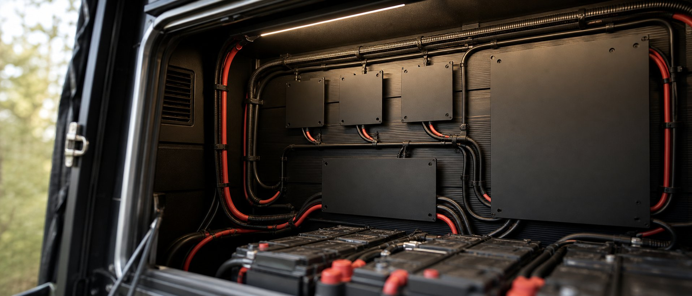

Wat is er aan de hand?

Op 28 september publiceerde China een industrieplan voor accu's dat tot 2030 loopt, ondertekend door maar liefst zeven ministeries tegelijk. Dat klinkt als bureaucratie, maar in de accuwereld is het richtinggevend: wat Peking opschrijft, bepaalt waar de fabrieken die ook jouw camperaccu maken hun geld in steken.
De hoofdlijnen: lithium-accu's moeten richting 15.000 laadcycli, vastestofaccu's moeten rond 2030 "op schaal" verschijnen, en natrium-ion krijgt een eigen plek — vooral voor stationaire opslag, waar gewicht er weinig toe doet en prijs en levensduur alles zijn. Opvallend is wat er níét in staat: nergens wordt gezegd dat natrium LiFePO4 moet vervangen. De technieken moeten naast elkaar bestaan.
Het past in een patroon. China stelde eerder dit jaar natrium-ion al vrij van de nieuwe accubelasting — daar schreven we in september over — en begin oktober kreeg in Duitsland een startup subsidie voor een natrium-thuisbatterij. De richting is duidelijk: natrium komt eraan, maar via het stopcontact thuis, niet via je camper.
Wat merk jij daarvan?
Voorlopig: weinig. En dat is geen slecht nieuws.
Voor wie nu een bus bouwt, verandert er niets aan het nuchtere advies: LiFePO4. Die techniek heeft ruim tien jaar praktijkdata, elke laadregelaar kent er een profiel voor, en de keurmeester weet wat hij voor zich heeft. Kant-en-klare 12V-natriumaccu's voor in de camper zijn er nog nauwelijks — in Japan werden begin dit jaar de eerste getoond, maar in Europa moet je er met een lantaarntje naar zoeken.
Vakblad pv magazine zette begin oktober de risico's van natrium-ion op een rij, en dat is ontnuchterende kost: er strijden nog drie verschillende celchemieën om de winst, er zijn nauwelijks onafhankelijke verouderingsdata, en verslijtende natriumcellen gedragen zich anders dan lithiumcellen — je accumonitor kan de conditie dus verkeerd inschatten. Meerdere natriumfabrikanten zijn bovendien al omgevallen. Dat zijn geen redenen om de techniek af te schrijven, wel om er niet als eerste je vakantie van af te laten hangen.
Wachten op natrium of vastestof kost je jaren waarin je gewoon op pad had gekund. En een "natrium-ready" of "toekomstbestendige" accu bestaat niet — dat is marketingtaal. Heb je nu een accu nodig: koop LiFePO4, goed gedocumenteerd, van een merk met vindbare garantie. Over vijf jaar kijk je wel weer.
Waar je juist nu op moet letten
Zodra een techniek hip wordt, duiken er webshops op die er garen bij willen spinnen. Zie je ergens een spotgoedkope "natrium-ion camperaccu" aangeboden: wees extra kritisch. Vraag naar het laadprofiel (past dat op jouw laadregelaar?), het UN38.3-transportdocument en de garantievoorwaarden. Kan de verkoper die niet laten zien, dan is het antwoord nee — hoe interessant het verhaal ook klinkt.
En wie ons stuk over natrium-ion van augustus las: alles daarin staat nog overeind. De techniek is veelbelovend, de prijs daalt, maar het praktische aanbod voor campers is er simpelweg nog niet.
Veelgestelde vragen
Wordt mijn LiFePO4-accu straks waardeloos?
Nee. Het Chinese plan zet juist in op méér soorten accu's naast elkaar, en LiFePO4 blijft daarin het werkpaard voor mobiele toepassingen. Een accu die tien tot vijftien jaar meegaat, koop je niet voor de restwaarde maar voor het gebruik.
Moet ik wachten op vastestofaccu's?
Die zijn nog verder weg dan natrium. "Op schaal rond 2030" betekent in de praktijk: eerst in dure elektrische auto's, daarna pas in losse accu's voor zelfbouwers. Reken er vóór 2032 niet op in de camperwinkel.
Hoeveel accu heb ik eigenlijk nodig?
Daar verandert dit nieuws niets aan: reken eerst je verbruik uit — dat doet de samensteller voor je — en koop daarop. Een goed gekozen accu van vandaag verslaat een perfecte accu van over vijf jaar die je nu niet hebt.
Bronnen
- pv magazine — China sets 2030 battery targets, backs sodium-ion and solid-state (oktober 2026)
- pv magazine — Sodium-ion batteries: the next frontier or the next risk? (oktober 2026)
- pv magazine — German startup wins grant for grid-charging sodium-ion home battery (oktober 2026)
- OpenVan — Sodium-ion batteries for motorhomes unveiled in Japan (januari 2026)